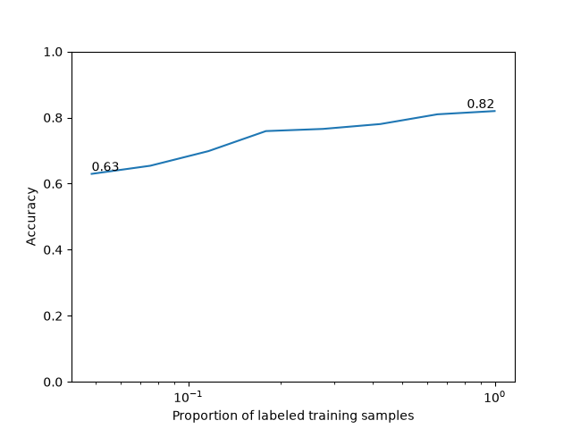

Note
Go to the end to download the full example code.
Self-Supervised Learning with I-JEPA on MedMNIST3D¶
This example demonstrates how to pretrain a 3D vision transformer with I-JEPA [1] on a MedMNIST3D dataset [2] using the nidl library. It will also show you how to evaluate the learned representations with a simple linear probe.
I-JEPA: the key idea behind I-JEPA is to learn representations by predicting masked-out image blocks from their surrounding context in the latent space . This is the main difference with Masked Autoencoders (MAE) which predicts the masked-out blocks in the pixel space.
3D adaptation: I-JEPA is designed to be flexible. Even if the original implementation only used 2d images, its extension to 3d volumes is straightforward. There are two key differences with the 2d case: the tokenization is performed with 3D patches, and the positional embeddings are 3D as well. As for the masking strategy, it follows the same random block subsampling strategy as in 2d.
In this tutorial, we will follow these steps:
Load a MedMNIST3D dataset.
Build a 3D vision transformer encoder.
Train an I-JEPA model, or optionally load pretrained weights from the Hugging Face Hub.
Evaluate the pretrained encoder on the downstream classification task with a logistic regression probe.
In this example we use OrganMNIST3D, one of the 3D datasets distributed by
MedMNIST. MedMNIST3D datasets are lightweight 3D medical image classification
benchmarks standardized to a common spatial size, which makes them convenient
for prototyping self-supervised pipelines.
Setup¶
This example requires medmnist in addition to nidl. If you want to load
pretrained weights from the Hugging Face Hub, you also need
huggingface_hub installed in your environment.
from __future__ import annotations
import os
from typing import Callable, Optional
import matplotlib.pyplot as plt
import medmnist
import numpy as np
import torch
from lightning_fabric import seed_everything
from medmnist import INFO
from sklearn.linear_model import LogisticRegression
from sklearn.metrics import accuracy_score
from torch.utils.data import DataLoader
from torchvision.transforms import Compose
from nidl.backbones.volume import VisionTransformer3D
from nidl.estimators.ssl import IJEPA
from nidl.transforms.volume.augmentation import RandomResizedCrop
from nidl.transforms.volume.preprocessing import ZNormalization
from nidl.utils.weights import Weights
We define some global parameters that will be used throughout the example.
Training a 3D I-JEPA model can take substantial time depending on your
hardware. By default, this example trains a lightweight configuration that is
suitable for a tutorial. If you later publish pretrained weights to the
Hugging Face Hub, set load_pretrained = True and fill the corresponding
repository information below.
Data-related parameters
# Directory where to download MedMNIST data
data_dir = "/tmp/medmnist"
# Directory where to cache optional pretrained weights
model_dir = "/tmp/nidl_example_ijepa_medmnist"
# MedMNIST3D dataset to use
dataset_name = "organmnist3d"
# Spatial size used by MedMNIST+ for 3D datasets
img_size = 64
# Whether to load a pretrained checkpoint from HF or train locally
load_pretrained = True
# Fill these two values once a checkpoint is published on HF
hf_repo_id = "neurospin/nidl_example_ijepa_medmnist"
hf_checkpoint = "nidl_example_ijepa_medmnist.pt"
Reproducibility and training configuration
# What accelerator to use: GPU if available, else CPU
accelerator = "gpu" if torch.cuda.is_available() else "cpu"
# Parameters for the data loaders. Reduce them if you run out of memory.
batch_size = 16
num_workers = 4
# Training configuration
max_epochs = 20
learning_rate = 3e-4
weight_decay = 5e-4
random_seed = 42
seed_everything(random_seed)
rd_generator = np.random.default_rng(seed=random_seed)
Data preparation¶
We first define a small MedMNIST3D dataset wrapper and the transforms used for self-supervised pretraining and downstream evaluation.
class MedMNIST3DDataset:
"""Simple wrapper around a MedMNIST3D split."""
def __init__(
self,
dataset_name: str,
root: str,
split: str,
transform: Optional[Callable] = None,
size: int = 64,
download: bool = True,
):
dataset_name = dataset_name.lower()
if dataset_name not in INFO:
raise ValueError(
f"Unknown MedMNIST dataset '{dataset_name}'. "
f"Available datasets include: {sorted(INFO.keys())}"
)
if "3d" not in dataset_name:
raise ValueError(
f"This example is written for MedMNIST3D datasets, got "
f"'{dataset_name}'."
)
info = INFO[dataset_name]
dataset_cls = getattr(medmnist, info["python_class"])
os.makedirs(root, exist_ok=True)
self.dataset = dataset_cls(
split=split,
root=root,
transform=transform,
download=download,
size=size,
as_rgb=False,
)
def __len__(self):
return len(self.dataset)
def __getitem__(self, index):
return self.dataset[index]
train_transform = Compose(
[
RandomResizedCrop(img_size, scale=(0.5, 1.0)),
ZNormalization(),
lambda x: torch.from_numpy(x).float(),
]
)
eval_transform = Compose(
[
ZNormalization(),
lambda x: torch.from_numpy(x).float(),
]
)
We create one dataset for self-supervised training, and labeled datasets for linear probing.
ssl_dataset = MedMNIST3DDataset(
dataset_name=dataset_name,
root=data_dir,
split="train",
transform=train_transform,
size=img_size,
)
train_xy_dataset = MedMNIST3DDataset(
dataset_name=dataset_name,
root=data_dir,
split="train",
transform=eval_transform,
size=img_size,
)
test_xy_dataset = MedMNIST3DDataset(
dataset_name=dataset_name,
root=data_dir,
split="test",
transform=eval_transform,
size=img_size,
)
0%| | 0.00/361M [00:00<?, ?B/s]
0%| | 32.8k/361M [00:00<23:23, 257kB/s]
0%| | 65.5k/361M [00:00<23:15, 259kB/s]
0%| | 131k/361M [00:00<16:04, 375kB/s]
0%| | 197k/361M [00:00<13:55, 433kB/s]
0%| | 262k/361M [00:00<13:01, 462kB/s]
0%| | 360k/361M [00:00<10:42, 562kB/s]
0%| | 492k/361M [00:00<08:28, 709kB/s]
0%| | 590k/361M [00:01<08:18, 724kB/s]
0%| | 688k/361M [00:01<10:40, 564kB/s]
0%| | 786k/361M [00:01<09:46, 615kB/s]
0%| | 885k/361M [00:01<09:09, 656kB/s]
0%| | 983k/361M [00:01<08:44, 687kB/s]
0%| | 1.08M/361M [00:01<10:51, 553kB/s]
0%| | 1.15M/361M [00:02<11:02, 544kB/s]
0%| | 1.25M/361M [00:02<09:59, 601kB/s]
0%| | 1.38M/361M [00:02<08:35, 699kB/s]
0%| | 1.47M/361M [00:02<08:23, 715kB/s]
0%| | 1.57M/361M [00:02<08:14, 728kB/s]
0%| | 1.67M/361M [00:02<08:08, 737kB/s]
0%| | 1.77M/361M [00:02<08:02, 745kB/s]
1%| | 1.90M/361M [00:02<07:14, 827kB/s]
1%| | 2.03M/361M [00:03<06:45, 886kB/s]
1%| | 2.20M/361M [00:03<05:59, 1.00MB/s]
1%| | 2.42M/361M [00:03<04:50, 1.24MB/s]
1%| | 2.56M/361M [00:03<05:05, 1.17MB/s]
1%| | 2.72M/361M [00:03<05:03, 1.18MB/s]
1%| | 2.85M/361M [00:03<05:15, 1.14MB/s]
1%| | 2.98M/361M [00:03<05:33, 1.07MB/s]
1%| | 3.11M/361M [00:04<07:16, 820kB/s]
1%| | 3.21M/361M [00:04<07:23, 808kB/s]
1%| | 3.31M/361M [00:04<07:28, 798kB/s]
1%| | 3.51M/361M [00:04<05:59, 997kB/s]
1%| | 3.64M/361M [00:04<05:56, 1.00MB/s]
1%| | 3.77M/361M [00:04<07:44, 769kB/s]
1%| | 3.87M/361M [00:05<07:44, 771kB/s]
1%| | 3.96M/361M [00:05<07:43, 771kB/s]
1%| | 4.06M/361M [00:05<07:43, 772kB/s]
1%| | 4.16M/361M [00:05<07:43, 771kB/s]
1%| | 4.26M/361M [00:05<07:43, 771kB/s]
1%|▏ | 4.52M/361M [00:05<05:15, 1.13MB/s]
1%|▏ | 4.65M/361M [00:05<05:24, 1.10MB/s]
1%|▏ | 4.78M/361M [00:05<05:30, 1.08MB/s]
1%|▏ | 4.92M/361M [00:06<09:31, 624kB/s]
1%|▏ | 5.01M/361M [00:06<09:07, 651kB/s]
1%|▏ | 5.11M/361M [00:06<08:49, 673kB/s]
1%|▏ | 5.21M/361M [00:06<08:33, 694kB/s]
1%|▏ | 5.31M/361M [00:06<08:18, 714kB/s]
2%|▏ | 5.44M/361M [00:07<07:25, 798kB/s]
2%|▏ | 5.64M/361M [00:07<05:55, 1.00MB/s]
2%|▏ | 5.77M/361M [00:07<05:52, 1.01MB/s]
2%|▏ | 5.90M/361M [00:07<05:50, 1.01MB/s]
2%|▏ | 6.03M/361M [00:07<05:49, 1.02MB/s]
2%|▏ | 6.16M/361M [00:07<05:48, 1.02MB/s]
2%|▏ | 6.29M/361M [00:07<05:47, 1.02MB/s]
2%|▏ | 6.42M/361M [00:07<05:46, 1.02MB/s]
2%|▏ | 6.55M/361M [00:08<05:46, 1.02MB/s]
2%|▏ | 6.68M/361M [00:08<05:46, 1.02MB/s]
2%|▏ | 6.82M/361M [00:08<05:55, 998kB/s]
2%|▏ | 6.95M/361M [00:08<05:53, 1.00MB/s]
2%|▏ | 7.08M/361M [00:08<05:50, 1.01MB/s]
2%|▏ | 7.21M/361M [00:08<05:48, 1.02MB/s]
2%|▏ | 7.34M/361M [00:08<05:47, 1.02MB/s]
2%|▏ | 7.47M/361M [00:08<05:46, 1.02MB/s]
2%|▏ | 7.60M/361M [00:09<05:45, 1.02MB/s]
2%|▏ | 7.73M/361M [00:09<05:45, 1.02MB/s]
2%|▏ | 7.86M/361M [00:09<05:45, 1.02MB/s]
2%|▏ | 8.00M/361M [00:09<05:44, 1.03MB/s]
2%|▏ | 8.13M/361M [00:09<05:47, 1.02MB/s]
2%|▏ | 8.26M/361M [00:09<07:32, 781kB/s]
2%|▏ | 8.36M/361M [00:09<07:36, 774kB/s]
2%|▏ | 8.45M/361M [00:10<07:37, 772kB/s]
2%|▏ | 8.59M/361M [00:10<07:06, 828kB/s]
2%|▏ | 8.68M/361M [00:10<07:24, 793kB/s]
2%|▏ | 8.81M/361M [00:10<06:51, 857kB/s]
2%|▏ | 8.95M/361M [00:10<06:29, 906kB/s]
3%|▎ | 9.04M/361M [00:10<06:46, 866kB/s]
3%|▎ | 9.24M/361M [00:10<05:31, 1.06MB/s]
3%|▎ | 9.37M/361M [00:11<05:37, 1.04MB/s]
3%|▎ | 9.50M/361M [00:11<05:38, 1.04MB/s]
3%|▎ | 9.63M/361M [00:11<05:39, 1.03MB/s]
3%|▎ | 9.76M/361M [00:11<05:40, 1.03MB/s]
3%|▎ | 9.90M/361M [00:11<05:44, 1.02MB/s]
3%|▎ | 10.0M/361M [00:11<07:27, 786kB/s]
3%|▎ | 10.2M/361M [00:11<07:00, 835kB/s]
3%|▎ | 10.3M/361M [00:12<07:11, 814kB/s]
3%|▎ | 10.4M/361M [00:12<07:17, 802kB/s]
3%|▎ | 10.6M/361M [00:12<05:48, 1.01MB/s]
3%|▎ | 10.7M/361M [00:12<05:46, 1.01MB/s]
3%|▎ | 10.8M/361M [00:12<05:44, 1.02MB/s]
3%|▎ | 10.9M/361M [00:12<05:42, 1.02MB/s]
3%|▎ | 11.1M/361M [00:12<04:58, 1.17MB/s]
3%|▎ | 11.3M/361M [00:12<05:10, 1.13MB/s]
3%|▎ | 11.4M/361M [00:13<05:23, 1.08MB/s]
3%|▎ | 11.5M/361M [00:13<07:04, 824kB/s]
3%|▎ | 11.7M/361M [00:13<06:13, 936kB/s]
3%|▎ | 11.8M/361M [00:13<06:06, 955kB/s]
3%|▎ | 12.0M/361M [00:13<05:58, 975kB/s]
3%|▎ | 12.1M/361M [00:13<05:37, 1.03MB/s]
4%|▎ | 12.7M/361M [00:13<02:57, 1.97MB/s]
4%|▎ | 13.5M/361M [00:14<01:49, 3.17MB/s]
4%|▍ | 15.4M/361M [00:14<00:52, 6.65MB/s]
5%|▍ | 16.4M/361M [00:14<00:48, 7.11MB/s]
5%|▍ | 17.2M/361M [00:14<00:51, 6.71MB/s]
5%|▍ | 17.9M/361M [00:14<01:10, 4.88MB/s]
5%|▌ | 18.5M/361M [00:14<01:11, 4.80MB/s]
5%|▌ | 19.0M/361M [00:15<01:13, 4.69MB/s]
5%|▌ | 19.6M/361M [00:15<01:15, 4.52MB/s]
6%|▌ | 20.1M/361M [00:15<01:19, 4.31MB/s]
6%|▌ | 20.5M/361M [00:15<01:23, 4.10MB/s]
6%|▌ | 20.9M/361M [00:15<01:28, 3.86MB/s]
6%|▌ | 21.3M/361M [00:15<01:33, 3.64MB/s]
6%|▌ | 21.7M/361M [00:15<01:38, 3.45MB/s]
6%|▌ | 22.1M/361M [00:15<01:41, 3.34MB/s]
6%|▋ | 22.6M/361M [00:16<01:38, 3.44MB/s]
6%|▋ | 23.1M/361M [00:16<01:37, 3.48MB/s]
7%|▋ | 23.6M/361M [00:16<01:35, 3.52MB/s]
7%|▋ | 24.1M/361M [00:16<01:33, 3.60MB/s]
7%|▋ | 24.4M/361M [00:16<01:39, 3.37MB/s]
7%|▋ | 24.9M/361M [00:16<01:35, 3.52MB/s]
7%|▋ | 25.4M/361M [00:16<01:33, 3.61MB/s]
7%|▋ | 25.9M/361M [00:16<01:32, 3.63MB/s]
7%|▋ | 26.3M/361M [00:17<01:34, 3.56MB/s]
7%|▋ | 26.8M/361M [00:17<01:33, 3.56MB/s]
8%|▊ | 27.3M/361M [00:17<01:35, 3.49MB/s]
8%|▊ | 27.8M/361M [00:17<01:32, 3.59MB/s]
8%|▊ | 28.1M/361M [00:17<01:38, 3.37MB/s]
8%|▊ | 28.6M/361M [00:17<01:37, 3.40MB/s]
8%|▊ | 29.1M/361M [00:17<01:38, 3.39MB/s]
8%|▊ | 29.5M/361M [00:18<01:39, 3.35MB/s]
8%|▊ | 30.0M/361M [00:18<01:36, 3.42MB/s]
8%|▊ | 30.5M/361M [00:18<01:32, 3.60MB/s]
9%|▊ | 30.9M/361M [00:18<01:34, 3.50MB/s]
9%|▊ | 31.3M/361M [00:18<01:39, 3.30MB/s]
9%|▉ | 31.7M/361M [00:18<01:39, 3.30MB/s]
9%|▉ | 32.2M/361M [00:18<01:35, 3.46MB/s]
9%|▉ | 32.7M/361M [00:18<01:34, 3.50MB/s]
9%|▉ | 33.2M/361M [00:19<01:32, 3.53MB/s]
9%|▉ | 33.6M/361M [00:19<01:33, 3.51MB/s]
9%|▉ | 34.1M/361M [00:19<01:32, 3.53MB/s]
10%|▉ | 34.4M/361M [00:19<01:34, 3.46MB/s]
10%|▉ | 34.9M/361M [00:19<01:36, 3.39MB/s]
10%|▉ | 35.2M/361M [00:19<01:41, 3.22MB/s]
10%|▉ | 35.7M/361M [00:19<01:35, 3.41MB/s]
10%|█ | 36.2M/361M [00:19<01:31, 3.54MB/s]
10%|█ | 36.7M/361M [00:20<01:31, 3.56MB/s]
10%|█ | 37.2M/361M [00:20<01:28, 3.65MB/s]
10%|█ | 37.6M/361M [00:20<01:29, 3.63MB/s]
11%|█ | 38.1M/361M [00:20<01:26, 3.74MB/s]
11%|█ | 38.6M/361M [00:20<01:25, 3.78MB/s]
11%|█ | 39.1M/361M [00:20<01:25, 3.78MB/s]
11%|█ | 39.6M/361M [00:20<01:26, 3.71MB/s]
11%|█ | 40.1M/361M [00:20<01:25, 3.74MB/s]
11%|█ | 40.6M/361M [00:21<01:33, 3.43MB/s]
11%|█▏ | 40.9M/361M [00:21<01:38, 3.26MB/s]
11%|█▏ | 41.4M/361M [00:21<01:37, 3.27MB/s]
12%|█▏ | 41.8M/361M [00:21<01:33, 3.41MB/s]
12%|█▏ | 42.3M/361M [00:21<01:33, 3.42MB/s]
12%|█▏ | 42.7M/361M [00:21<01:35, 3.32MB/s]
12%|█▏ | 43.2M/361M [00:21<01:29, 3.55MB/s]
12%|█▏ | 43.7M/361M [00:22<01:27, 3.65MB/s]
12%|█▏ | 44.1M/361M [00:22<01:31, 3.48MB/s]
12%|█▏ | 44.5M/361M [00:22<01:33, 3.41MB/s]
12%|█▏ | 45.0M/361M [00:22<01:33, 3.40MB/s]
13%|█▎ | 45.4M/361M [00:22<01:32, 3.42MB/s]
13%|█▎ | 45.9M/361M [00:22<01:29, 3.51MB/s]
13%|█▎ | 46.3M/361M [00:22<01:33, 3.38MB/s]
13%|█▎ | 46.8M/361M [00:22<01:32, 3.41MB/s]
13%|█▎ | 47.7M/361M [00:23<01:06, 4.73MB/s]
14%|█▍ | 51.1M/361M [00:23<00:27, 11.5MB/s]
14%|█▍ | 52.3M/361M [00:23<00:28, 10.7MB/s]
15%|█▍ | 53.3M/361M [00:23<00:39, 7.72MB/s]
15%|█▌ | 54.2M/361M [00:23<00:41, 7.34MB/s]
15%|█▌ | 55.1M/361M [00:23<00:43, 7.07MB/s]
15%|█▌ | 55.8M/361M [00:23<00:45, 6.72MB/s]
16%|█▌ | 56.5M/361M [00:24<00:59, 5.11MB/s]
16%|█▌ | 57.2M/361M [00:24<00:59, 5.11MB/s]
16%|█▌ | 57.9M/361M [00:24<01:04, 4.74MB/s]
16%|█▌ | 58.6M/361M [00:24<01:04, 4.71MB/s]
16%|█▋ | 59.1M/361M [00:24<01:06, 4.56MB/s]
17%|█▋ | 59.7M/361M [00:24<01:05, 4.60MB/s]
17%|█▋ | 60.4M/361M [00:25<01:04, 4.66MB/s]
17%|█▋ | 61.1M/361M [00:25<01:05, 4.57MB/s]
17%|█▋ | 61.6M/361M [00:25<01:08, 4.35MB/s]
17%|█▋ | 62.2M/361M [00:25<01:06, 4.48MB/s]
17%|█▋ | 62.8M/361M [00:25<01:04, 4.65MB/s]
18%|█▊ | 63.5M/361M [00:25<01:01, 4.84MB/s]
18%|█▊ | 64.0M/361M [00:25<01:01, 4.85MB/s]
18%|█▊ | 64.5M/361M [00:25<01:05, 4.57MB/s]
18%|█▊ | 65.0M/361M [00:26<01:10, 4.21MB/s]
18%|█▊ | 65.4M/361M [00:26<01:16, 3.88MB/s]
18%|█▊ | 66.0M/361M [00:26<01:10, 4.17MB/s]
18%|█▊ | 66.5M/361M [00:26<01:11, 4.13MB/s]
19%|█▊ | 66.9M/361M [00:26<01:12, 4.09MB/s]
19%|█▊ | 67.3M/361M [00:26<01:14, 3.92MB/s]
19%|█▉ | 67.9M/361M [00:26<01:12, 4.04MB/s]
19%|█▉ | 68.6M/361M [00:26<01:06, 4.38MB/s]
19%|█▉ | 69.2M/361M [00:27<01:06, 4.39MB/s]
19%|█▉ | 69.9M/361M [00:27<01:02, 4.68MB/s]
20%|█▉ | 70.6M/361M [00:27<00:59, 4.89MB/s]
20%|█▉ | 71.3M/361M [00:27<00:57, 5.04MB/s]
20%|█▉ | 72.0M/361M [00:27<00:57, 5.07MB/s]
20%|██ | 72.6M/361M [00:27<00:56, 5.08MB/s]
20%|██ | 73.3M/361M [00:27<00:56, 5.09MB/s]
20%|██ | 74.0M/361M [00:28<00:57, 5.03MB/s]
21%|██ | 74.7M/361M [00:28<00:56, 5.09MB/s]
21%|██ | 75.3M/361M [00:28<00:56, 5.11MB/s]
21%|██ | 76.0M/361M [00:28<00:56, 5.08MB/s]
21%|██ | 76.5M/361M [00:28<00:59, 4.76MB/s]
21%|██▏ | 77.1M/361M [00:28<00:59, 4.78MB/s]
22%|██▏ | 77.8M/361M [00:28<00:57, 4.94MB/s]
22%|██▏ | 78.5M/361M [00:28<00:55, 5.08MB/s]
22%|██▏ | 79.2M/361M [00:29<00:54, 5.17MB/s]
22%|██▏ | 79.8M/361M [00:29<00:57, 4.89MB/s]
22%|██▏ | 80.5M/361M [00:29<00:55, 5.02MB/s]
22%|██▏ | 81.1M/361M [00:29<00:56, 4.95MB/s]
23%|██▎ | 81.7M/361M [00:29<01:24, 3.30MB/s]
23%|██▎ | 82.4M/361M [00:29<01:16, 3.63MB/s]
23%|██▎ | 83.0M/361M [00:30<01:13, 3.77MB/s]
23%|██▎ | 83.7M/361M [00:30<01:10, 3.93MB/s]
23%|██▎ | 84.2M/361M [00:30<01:09, 3.97MB/s]
23%|██▎ | 84.9M/361M [00:30<01:03, 4.33MB/s]
24%|██▎ | 85.6M/361M [00:30<01:00, 4.55MB/s]
24%|██▍ | 86.2M/361M [00:30<01:07, 4.09MB/s]
24%|██▍ | 86.8M/361M [00:31<01:06, 4.16MB/s]
24%|██▍ | 87.5M/361M [00:31<01:01, 4.42MB/s]
24%|██▍ | 88.1M/361M [00:31<01:00, 4.55MB/s]
25%|██▍ | 88.8M/361M [00:31<00:58, 4.66MB/s]
25%|██▍ | 89.4M/361M [00:31<01:00, 4.49MB/s]
25%|██▍ | 90.0M/361M [00:31<00:58, 4.67MB/s]
25%|██▌ | 90.6M/361M [00:31<01:01, 4.44MB/s]
25%|██▌ | 91.3M/361M [00:31<00:59, 4.54MB/s]
25%|██▌ | 91.9M/361M [00:32<00:58, 4.63MB/s]
26%|██▌ | 92.5M/361M [00:32<00:58, 4.63MB/s]
26%|██▌ | 93.0M/361M [00:32<01:00, 4.41MB/s]
26%|██▌ | 93.6M/361M [00:32<00:59, 4.53MB/s]
26%|██▌ | 94.3M/361M [00:32<00:55, 4.84MB/s]
26%|██▌ | 94.8M/361M [00:32<00:59, 4.45MB/s]
26%|██▋ | 95.3M/361M [00:32<01:03, 4.20MB/s]
26%|██▋ | 95.7M/361M [00:32<01:06, 4.00MB/s]
27%|██▋ | 96.2M/361M [00:33<01:05, 4.03MB/s]
27%|██▋ | 96.9M/361M [00:33<01:02, 4.25MB/s]
27%|██▋ | 97.6M/361M [00:33<01:00, 4.35MB/s]
27%|██▋ | 98.2M/361M [00:33<00:57, 4.57MB/s]
27%|██▋ | 98.8M/361M [00:33<00:58, 4.47MB/s]
27%|██▋ | 99.4M/361M [00:33<00:54, 4.80MB/s]
28%|██▊ | 99.8M/361M [00:33<00:57, 4.58MB/s]
28%|██▊ | 100M/361M [00:34<00:57, 4.52MB/s]
28%|██▊ | 101M/361M [00:34<00:54, 4.76MB/s]
28%|██▊ | 102M/361M [00:34<00:56, 4.56MB/s]
28%|██▊ | 102M/361M [00:34<01:00, 4.28MB/s]
28%|██▊ | 103M/361M [00:34<00:56, 4.61MB/s]
29%|██▊ | 103M/361M [00:34<00:52, 4.92MB/s]
29%|██▉ | 104M/361M [00:34<00:51, 4.98MB/s]
29%|██▉ | 105M/361M [00:35<02:02, 2.09MB/s]
29%|██▉ | 105M/361M [00:35<01:40, 2.54MB/s]
29%|██▉ | 106M/361M [00:35<01:31, 2.78MB/s]
29%|██▉ | 107M/361M [00:35<01:15, 3.38MB/s]
30%|██▉ | 107M/361M [00:35<01:13, 3.47MB/s]
30%|██▉ | 107M/361M [00:36<01:12, 3.50MB/s]
30%|██▉ | 108M/361M [00:36<01:13, 3.43MB/s]
30%|██▉ | 108M/361M [00:36<01:17, 3.28MB/s]
30%|███ | 109M/361M [00:36<01:20, 3.14MB/s]
30%|███ | 109M/361M [00:36<01:22, 3.05MB/s]
30%|███ | 109M/361M [00:36<01:26, 2.91MB/s]
30%|███ | 110M/361M [00:36<01:23, 3.01MB/s]
31%|███ | 110M/361M [00:37<01:19, 3.18MB/s]
31%|███ | 111M/361M [00:37<01:17, 3.22MB/s]
31%|███ | 111M/361M [00:37<01:19, 3.15MB/s]
31%|███ | 112M/361M [00:37<01:20, 3.11MB/s]
31%|███ | 112M/361M [00:37<01:21, 3.06MB/s]
31%|███ | 112M/361M [00:37<01:25, 2.92MB/s]
31%|███ | 113M/361M [00:37<01:21, 3.04MB/s]
31%|███▏ | 113M/361M [00:37<01:17, 3.20MB/s]
31%|███▏ | 114M/361M [00:38<01:16, 3.24MB/s]
32%|███▏ | 114M/361M [00:38<01:17, 3.19MB/s]
32%|███▏ | 114M/361M [00:38<01:18, 3.14MB/s]
32%|███▏ | 115M/361M [00:38<01:17, 3.17MB/s]
32%|███▏ | 115M/361M [00:38<01:17, 3.18MB/s]
32%|███▏ | 116M/361M [00:38<01:19, 3.08MB/s]
32%|███▏ | 116M/361M [00:38<01:18, 3.14MB/s]
32%|███▏ | 117M/361M [00:39<01:19, 3.09MB/s]
32%|███▏ | 117M/361M [00:39<01:20, 3.04MB/s]
32%|███▏ | 117M/361M [00:39<01:14, 3.27MB/s]
33%|███▎ | 118M/361M [00:39<01:14, 3.29MB/s]
33%|███▎ | 118M/361M [00:39<01:11, 3.38MB/s]
33%|███▎ | 119M/361M [00:39<01:12, 3.37MB/s]
33%|███▎ | 119M/361M [00:39<01:16, 3.17MB/s]
33%|███▎ | 119M/361M [00:39<01:17, 3.13MB/s]
33%|███▎ | 120M/361M [00:40<01:17, 3.10MB/s]
33%|███▎ | 120M/361M [00:40<01:18, 3.09MB/s]
33%|███▎ | 121M/361M [00:40<01:16, 3.15MB/s]
33%|███▎ | 121M/361M [00:40<01:17, 3.12MB/s]
34%|███▎ | 122M/361M [00:40<01:14, 3.22MB/s]
34%|███▎ | 122M/361M [00:40<01:14, 3.23MB/s]
34%|███▍ | 122M/361M [00:40<01:15, 3.19MB/s]
34%|███▍ | 123M/361M [00:40<01:13, 3.23MB/s]
34%|███▍ | 123M/361M [00:41<01:14, 3.19MB/s]
34%|███▍ | 124M/361M [00:41<01:10, 3.38MB/s]
34%|███▍ | 124M/361M [00:41<01:10, 3.37MB/s]
34%|███▍ | 124M/361M [00:41<01:14, 3.19MB/s]
35%|███▍ | 125M/361M [00:41<01:14, 3.19MB/s]
35%|███▍ | 125M/361M [00:41<01:13, 3.22MB/s]
35%|███▍ | 126M/361M [00:41<01:17, 3.03MB/s]
35%|███▍ | 126M/361M [00:42<01:16, 3.10MB/s]
35%|███▍ | 126M/361M [00:42<01:16, 3.07MB/s]
35%|███▌ | 127M/361M [00:42<01:15, 3.11MB/s]
35%|███▌ | 127M/361M [00:42<01:16, 3.08MB/s]
35%|███▌ | 128M/361M [00:42<01:14, 3.13MB/s]
35%|███▌ | 128M/361M [00:42<01:15, 3.10MB/s]
36%|███▌ | 128M/361M [00:42<01:19, 2.94MB/s]
36%|███▌ | 129M/361M [00:42<01:15, 3.06MB/s]
36%|███▌ | 129M/361M [00:43<01:13, 3.14MB/s]
36%|███▌ | 130M/361M [00:43<01:14, 3.10MB/s]
36%|███▌ | 130M/361M [00:43<01:15, 3.08MB/s]
36%|███▌ | 130M/361M [00:43<01:21, 2.83MB/s]
36%|███▌ | 131M/361M [00:43<01:21, 2.82MB/s]
36%|███▋ | 131M/361M [00:44<02:25, 1.59MB/s]
36%|███▋ | 132M/361M [00:44<02:07, 1.81MB/s]
36%|███▋ | 132M/361M [00:44<01:51, 2.07MB/s]
37%|███▋ | 132M/361M [00:44<01:41, 2.26MB/s]
37%|███▋ | 133M/361M [00:44<01:36, 2.37MB/s]
37%|███▋ | 133M/361M [00:44<01:30, 2.53MB/s]
37%|███▋ | 134M/361M [00:44<01:21, 2.81MB/s]
37%|███▋ | 134M/361M [00:44<01:17, 2.95MB/s]
37%|███▋ | 135M/361M [00:45<01:10, 3.21MB/s]
37%|███▋ | 135M/361M [00:45<00:54, 4.19MB/s]
38%|███▊ | 136M/361M [00:45<00:53, 4.23MB/s]
38%|███▊ | 137M/361M [00:45<00:50, 4.42MB/s]
38%|███▊ | 137M/361M [00:45<00:53, 4.17MB/s]
38%|███▊ | 138M/361M [00:45<00:54, 4.14MB/s]
38%|███▊ | 138M/361M [00:45<00:57, 3.90MB/s]
38%|███▊ | 138M/361M [00:46<00:59, 3.72MB/s]
38%|███▊ | 139M/361M [00:46<01:03, 3.51MB/s]
38%|███▊ | 139M/361M [00:46<01:31, 2.42MB/s]
39%|███▊ | 139M/361M [00:46<01:32, 2.39MB/s]
39%|███▊ | 140M/361M [00:46<01:33, 2.37MB/s]
39%|███▉ | 140M/361M [00:46<01:28, 2.49MB/s]
39%|███▉ | 141M/361M [00:46<01:17, 2.86MB/s]
39%|███▉ | 141M/361M [00:47<01:11, 3.07MB/s]
39%|███▉ | 141M/361M [00:47<01:11, 3.07MB/s]
39%|███▉ | 142M/361M [00:47<01:17, 2.85MB/s]
39%|███▉ | 142M/361M [00:47<01:18, 2.80MB/s]
39%|███▉ | 142M/361M [00:47<01:22, 2.66MB/s]
40%|███▉ | 143M/361M [00:47<01:18, 2.77MB/s]
40%|███▉ | 143M/361M [00:47<01:15, 2.90MB/s]
40%|███▉ | 144M/361M [00:48<01:59, 1.82MB/s]
40%|███▉ | 144M/361M [00:48<01:53, 1.92MB/s]
40%|███▉ | 144M/361M [00:48<01:40, 2.17MB/s]
40%|████ | 145M/361M [00:48<01:30, 2.39MB/s]
40%|████ | 145M/361M [00:48<01:26, 2.49MB/s]
40%|████ | 146M/361M [00:48<01:08, 3.13MB/s]
40%|████ | 146M/361M [00:49<01:09, 3.12MB/s]
41%|████ | 146M/361M [00:49<01:09, 3.11MB/s]
41%|████ | 147M/361M [00:49<01:12, 2.96MB/s]
41%|████ | 147M/361M [00:49<01:13, 2.92MB/s]
41%|████ | 148M/361M [00:49<01:13, 2.89MB/s]
41%|████ | 148M/361M [00:49<01:12, 2.95MB/s]
41%|████ | 148M/361M [00:49<01:11, 2.98MB/s]
41%|████ | 149M/361M [00:49<01:07, 3.16MB/s]
41%|████ | 149M/361M [00:50<01:11, 2.96MB/s]
41%|████▏ | 150M/361M [00:50<01:07, 3.14MB/s]
41%|████▏ | 150M/361M [00:50<01:11, 2.95MB/s]
42%|████▏ | 150M/361M [00:50<01:08, 3.06MB/s]
42%|████▏ | 151M/361M [00:50<01:16, 2.77MB/s]
42%|████▏ | 151M/361M [00:50<01:20, 2.62MB/s]
42%|████▏ | 151M/361M [00:50<01:21, 2.59MB/s]
42%|████▏ | 152M/361M [00:50<01:20, 2.60MB/s]
42%|████▏ | 152M/361M [00:51<01:12, 2.89MB/s]
42%|████▏ | 152M/361M [00:51<01:10, 2.95MB/s]
42%|████▏ | 153M/361M [00:51<01:10, 2.98MB/s]
42%|████▏ | 153M/361M [00:51<01:04, 3.22MB/s]
43%|████▎ | 154M/361M [00:51<01:07, 3.09MB/s]
43%|████▎ | 154M/361M [00:51<01:07, 3.08MB/s]
43%|████▎ | 155M/361M [00:51<01:03, 3.23MB/s]
43%|████▎ | 155M/361M [00:52<01:04, 3.19MB/s]
43%|████▎ | 155M/361M [00:52<01:04, 3.21MB/s]
43%|████▎ | 156M/361M [00:52<01:05, 3.16MB/s]
43%|████▎ | 156M/361M [00:52<01:05, 3.12MB/s]
43%|████▎ | 157M/361M [00:52<01:05, 3.11MB/s]
44%|████▎ | 157M/361M [00:52<00:52, 3.91MB/s]
44%|████▎ | 158M/361M [00:52<00:56, 3.60MB/s]
44%|████▍ | 158M/361M [00:52<00:56, 3.60MB/s]
44%|████▍ | 159M/361M [00:53<00:57, 3.52MB/s]
44%|████▍ | 159M/361M [00:53<01:00, 3.32MB/s]
44%|████▍ | 159M/361M [00:53<01:02, 3.23MB/s]
44%|████▍ | 160M/361M [00:53<02:13, 1.52MB/s]
44%|████▍ | 160M/361M [00:54<01:59, 1.68MB/s]
44%|████▍ | 160M/361M [00:54<01:43, 1.94MB/s]
45%|████▍ | 161M/361M [00:54<01:31, 2.18MB/s]
45%|████▍ | 161M/361M [00:54<01:24, 2.38MB/s]
45%|████▍ | 162M/361M [00:54<01:16, 2.62MB/s]
45%|████▍ | 162M/361M [00:54<01:12, 2.74MB/s]
45%|████▍ | 162M/361M [00:54<01:10, 2.83MB/s]
45%|████▌ | 163M/361M [00:54<01:08, 2.90MB/s]
45%|████▌ | 163M/361M [00:55<01:05, 3.01MB/s]
45%|████▌ | 164M/361M [00:55<01:04, 3.07MB/s]
45%|████▌ | 164M/361M [00:55<01:02, 3.14MB/s]
46%|████▌ | 164M/361M [00:55<01:06, 2.97MB/s]
46%|████▌ | 165M/361M [00:55<01:09, 2.85MB/s]
46%|████▌ | 165M/361M [00:55<01:43, 1.90MB/s]
46%|████▌ | 166M/361M [00:56<01:30, 2.16MB/s]
46%|████▌ | 166M/361M [00:56<01:24, 2.30MB/s]
46%|████▌ | 166M/361M [00:56<01:28, 2.22MB/s]
46%|████▌ | 166M/361M [00:56<01:23, 2.35MB/s]
46%|████▌ | 167M/361M [00:56<01:18, 2.48MB/s]
46%|████▌ | 167M/361M [00:56<01:19, 2.43MB/s]
46%|████▋ | 168M/361M [00:56<01:12, 2.68MB/s]
46%|████▋ | 168M/361M [00:56<01:07, 2.87MB/s]
47%|████▋ | 168M/361M [00:57<01:04, 3.01MB/s]
47%|████▋ | 169M/361M [00:57<01:03, 3.03MB/s]
47%|████▋ | 169M/361M [00:57<01:01, 3.11MB/s]
47%|████▋ | 170M/361M [00:57<01:01, 3.10MB/s]
47%|████▋ | 170M/361M [00:57<01:01, 3.09MB/s]
47%|████▋ | 170M/361M [00:57<01:01, 3.08MB/s]
47%|████▋ | 171M/361M [00:57<01:03, 3.01MB/s]
47%|████▋ | 171M/361M [00:57<01:06, 2.86MB/s]
47%|████▋ | 172M/361M [00:58<01:10, 2.69MB/s]
48%|████▊ | 172M/361M [00:58<01:09, 2.72MB/s]
48%|████▊ | 172M/361M [00:58<01:07, 2.82MB/s]
48%|████▊ | 173M/361M [00:58<01:05, 2.89MB/s]
48%|████▊ | 173M/361M [00:58<01:02, 3.02MB/s]
48%|████▊ | 174M/361M [00:58<01:03, 2.96MB/s]
48%|████▊ | 174M/361M [00:58<01:00, 3.08MB/s]
48%|████▊ | 174M/361M [00:59<01:03, 2.97MB/s]
48%|████▊ | 175M/361M [00:59<01:04, 2.90MB/s]
48%|████▊ | 175M/361M [00:59<01:08, 2.71MB/s]
48%|████▊ | 175M/361M [00:59<01:08, 2.72MB/s]
49%|████▊ | 176M/361M [00:59<01:13, 2.55MB/s]
49%|████▊ | 176M/361M [00:59<01:13, 2.53MB/s]
49%|████▉ | 176M/361M [00:59<01:13, 2.53MB/s]
49%|████▉ | 177M/361M [00:59<01:08, 2.72MB/s]
49%|████▉ | 177M/361M [01:00<01:05, 2.82MB/s]
49%|████▉ | 178M/361M [01:00<01:05, 2.82MB/s]
49%|████▉ | 178M/361M [01:00<01:00, 3.04MB/s]
49%|████▉ | 178M/361M [01:00<01:01, 2.97MB/s]
49%|████▉ | 179M/361M [01:00<01:00, 3.00MB/s]
50%|████▉ | 179M/361M [01:00<01:01, 2.95MB/s]
50%|████▉ | 180M/361M [01:00<00:57, 3.14MB/s]
50%|████▉ | 180M/361M [01:01<00:55, 3.27MB/s]
50%|████▉ | 180M/361M [01:01<00:53, 3.41MB/s]
50%|█████ | 181M/361M [01:01<00:56, 3.21MB/s]
50%|█████ | 181M/361M [01:01<00:58, 3.09MB/s]
50%|█████ | 182M/361M [01:01<00:59, 3.04MB/s]
50%|█████ | 182M/361M [01:01<00:57, 3.12MB/s]
51%|█████ | 183M/361M [01:01<00:57, 3.11MB/s]
51%|█████ | 183M/361M [01:01<00:53, 3.31MB/s]
51%|█████ | 183M/361M [01:02<00:56, 3.16MB/s]
51%|█████ | 184M/361M [01:02<00:54, 3.27MB/s]
51%|█████ | 184M/361M [01:02<00:55, 3.17MB/s]
51%|█████ | 185M/361M [01:02<00:57, 3.07MB/s]
51%|█████ | 185M/361M [01:02<00:58, 2.99MB/s]
51%|█████▏ | 186M/361M [01:02<00:57, 3.03MB/s]
51%|█████▏ | 186M/361M [01:02<00:57, 3.04MB/s]
52%|█████▏ | 186M/361M [01:03<00:57, 3.04MB/s]
52%|█████▏ | 187M/361M [01:03<00:57, 3.06MB/s]
52%|█████▏ | 187M/361M [01:03<00:57, 3.02MB/s]
52%|█████▏ | 188M/361M [01:03<00:51, 3.38MB/s]
52%|█████▏ | 188M/361M [01:03<00:52, 3.29MB/s]
52%|█████▏ | 189M/361M [01:03<00:53, 3.21MB/s]
52%|█████▏ | 189M/361M [01:03<00:55, 3.11MB/s]
52%|█████▏ | 189M/361M [01:04<00:55, 3.09MB/s]
53%|█████▎ | 190M/361M [01:04<00:53, 3.23MB/s]
53%|█████▎ | 190M/361M [01:04<00:55, 3.11MB/s]
53%|█████▎ | 191M/361M [01:04<00:55, 3.10MB/s]
53%|█████▎ | 191M/361M [01:04<00:55, 3.09MB/s]
53%|█████▎ | 191M/361M [01:04<00:55, 3.06MB/s]
53%|█████▎ | 192M/361M [01:04<00:57, 2.96MB/s]
53%|█████▎ | 192M/361M [01:04<01:04, 2.64MB/s]
53%|█████▎ | 193M/361M [01:05<00:42, 3.98MB/s]
54%|█████▎ | 194M/361M [01:05<00:30, 5.49MB/s]
54%|█████▍ | 195M/361M [01:05<00:24, 6.66MB/s]
54%|█████▍ | 197M/361M [01:05<00:21, 7.57MB/s]
55%|█████▍ | 197M/361M [01:05<00:26, 6.29MB/s]
55%|█████▍ | 198M/361M [01:05<00:34, 4.68MB/s]
55%|█████▍ | 199M/361M [01:06<00:37, 4.34MB/s]
55%|█████▌ | 199M/361M [01:06<00:45, 3.55MB/s]
55%|█████▌ | 200M/361M [01:06<00:46, 3.46MB/s]
55%|█████▌ | 200M/361M [01:06<00:50, 3.23MB/s]
55%|█████▌ | 201M/361M [01:06<00:47, 3.41MB/s]
56%|█████▌ | 201M/361M [01:06<00:48, 3.33MB/s]
56%|█████▌ | 201M/361M [01:07<00:50, 3.19MB/s]
56%|█████▌ | 202M/361M [01:07<00:52, 3.02MB/s]
56%|█████▌ | 202M/361M [01:07<00:52, 3.03MB/s]
56%|█████▌ | 202M/361M [01:07<00:51, 3.09MB/s]
56%|█████▌ | 203M/361M [01:07<00:52, 3.01MB/s]
56%|█████▌ | 203M/361M [01:07<00:52, 3.03MB/s]
56%|█████▋ | 204M/361M [01:07<00:50, 3.11MB/s]
56%|█████▋ | 204M/361M [01:07<00:49, 3.18MB/s]
57%|█████▋ | 204M/361M [01:08<00:52, 3.00MB/s]
57%|█████▋ | 205M/361M [01:08<00:50, 3.07MB/s]
57%|█████▋ | 205M/361M [01:08<01:29, 1.75MB/s]
57%|█████▋ | 205M/361M [01:08<01:19, 1.95MB/s]
57%|█████▋ | 206M/361M [01:08<01:11, 2.19MB/s]
57%|█████▋ | 206M/361M [01:08<01:03, 2.43MB/s]
57%|█████▋ | 207M/361M [01:09<00:58, 2.64MB/s]
57%|█████▋ | 207M/361M [01:09<00:54, 2.81MB/s]
57%|█████▋ | 208M/361M [01:09<00:52, 2.91MB/s]
58%|█████▊ | 208M/361M [01:09<00:52, 2.91MB/s]
58%|█████▊ | 208M/361M [01:09<00:51, 2.98MB/s]
58%|█████▊ | 209M/361M [01:09<00:50, 3.00MB/s]
58%|█████▊ | 209M/361M [01:09<00:51, 2.98MB/s]
58%|█████▊ | 210M/361M [01:10<00:51, 2.94MB/s]
58%|█████▊ | 210M/361M [01:10<00:52, 2.90MB/s]
58%|█████▊ | 210M/361M [01:10<00:52, 2.86MB/s]
58%|█████▊ | 211M/361M [01:10<00:51, 2.91MB/s]
58%|█████▊ | 211M/361M [01:10<00:50, 2.98MB/s]
59%|█████▊ | 212M/361M [01:10<00:48, 3.10MB/s]
59%|█████▊ | 212M/361M [01:10<00:47, 3.13MB/s]
59%|█████▉ | 213M/361M [01:11<00:47, 3.16MB/s]
59%|█████▉ | 213M/361M [01:11<00:46, 3.16MB/s]
59%|█████▉ | 213M/361M [01:11<00:47, 3.13MB/s]
59%|█████▉ | 214M/361M [01:11<00:47, 3.11MB/s]
59%|█████▉ | 214M/361M [01:11<00:46, 3.15MB/s]
59%|█████▉ | 215M/361M [01:11<00:47, 3.12MB/s]
59%|█████▉ | 215M/361M [01:11<00:52, 2.78MB/s]
60%|█████▉ | 215M/361M [01:11<00:54, 2.70MB/s]
60%|█████▉ | 216M/361M [01:12<00:56, 2.58MB/s]
60%|█████▉ | 216M/361M [01:12<00:51, 2.80MB/s]
60%|█████▉ | 217M/361M [01:12<00:47, 3.03MB/s]
60%|██████ | 217M/361M [01:12<00:46, 3.11MB/s]
60%|██████ | 217M/361M [01:12<00:45, 3.15MB/s]
60%|██████ | 218M/361M [01:12<00:45, 3.13MB/s]
60%|██████ | 218M/361M [01:12<00:44, 3.19MB/s]
60%|██████ | 219M/361M [01:13<00:44, 3.23MB/s]
61%|██████ | 219M/361M [01:13<00:44, 3.18MB/s]
61%|██████ | 220M/361M [01:13<00:42, 3.35MB/s]
61%|██████ | 220M/361M [01:13<00:43, 3.23MB/s]
61%|██████ | 220M/361M [01:13<00:44, 3.19MB/s]
61%|██████ | 221M/361M [01:13<00:45, 3.07MB/s]
61%|██████ | 221M/361M [01:13<00:45, 3.11MB/s]
61%|██████▏ | 222M/361M [01:13<00:46, 3.02MB/s]
61%|██████▏ | 222M/361M [01:14<00:43, 3.18MB/s]
62%|██████▏ | 222M/361M [01:14<00:44, 3.14MB/s]
62%|██████▏ | 223M/361M [01:14<00:43, 3.20MB/s]
62%|██████▏ | 223M/361M [01:14<00:43, 3.21MB/s]
62%|██████▏ | 224M/361M [01:14<00:42, 3.22MB/s]
62%|██████▏ | 224M/361M [01:14<00:44, 3.11MB/s]
62%|██████▏ | 225M/361M [01:14<00:42, 3.19MB/s]
62%|██████▏ | 225M/361M [01:15<00:42, 3.22MB/s]
62%|██████▏ | 225M/361M [01:15<00:41, 3.24MB/s]
62%|██████▏ | 226M/361M [01:15<00:42, 3.18MB/s]
63%|██████▎ | 226M/361M [01:15<00:42, 3.22MB/s]
63%|██████▎ | 227M/361M [01:15<00:39, 3.40MB/s]
63%|██████▎ | 227M/361M [01:15<00:40, 3.30MB/s]
63%|██████▎ | 228M/361M [01:15<00:40, 3.31MB/s]
63%|██████▎ | 228M/361M [01:15<00:40, 3.32MB/s]
63%|██████▎ | 228M/361M [01:16<00:39, 3.33MB/s]
63%|██████▎ | 229M/361M [01:16<00:40, 3.25MB/s]
63%|██████▎ | 229M/361M [01:16<00:41, 3.22MB/s]
63%|██████▎ | 229M/361M [01:16<00:44, 2.99MB/s]
64%|██████▎ | 230M/361M [01:16<00:43, 3.00MB/s]
64%|██████▎ | 230M/361M [01:16<00:42, 3.09MB/s]
64%|██████▍ | 231M/361M [01:16<00:41, 3.15MB/s]
64%|██████▍ | 231M/361M [01:17<00:56, 2.32MB/s]
64%|██████▍ | 231M/361M [01:17<00:57, 2.25MB/s]
64%|██████▍ | 232M/361M [01:17<00:56, 2.31MB/s]
64%|██████▍ | 232M/361M [01:17<00:49, 2.59MB/s]
64%|██████▍ | 232M/361M [01:17<00:49, 2.58MB/s]
64%|██████▍ | 233M/361M [01:17<00:44, 2.87MB/s]
65%|██████▍ | 233M/361M [01:17<00:42, 3.00MB/s]
65%|██████▍ | 234M/361M [01:17<00:40, 3.15MB/s]
65%|██████▍ | 234M/361M [01:18<00:40, 3.18MB/s]
65%|██████▍ | 235M/361M [01:18<00:40, 3.12MB/s]
65%|██████▌ | 235M/361M [01:18<00:38, 3.24MB/s]
65%|██████▌ | 235M/361M [01:18<00:40, 3.15MB/s]
65%|██████▌ | 236M/361M [01:18<00:32, 3.88MB/s]
66%|██████▌ | 238M/361M [01:18<00:23, 5.32MB/s]
66%|██████▌ | 239M/361M [01:18<00:17, 7.19MB/s]
67%|██████▋ | 241M/361M [01:19<00:13, 8.78MB/s]
67%|██████▋ | 242M/361M [01:19<00:11, 10.1MB/s]
67%|██████▋ | 243M/361M [01:19<00:12, 9.31MB/s]
68%|██████▊ | 244M/361M [01:19<00:17, 6.84MB/s]
68%|██████▊ | 245M/361M [01:19<00:21, 5.39MB/s]
68%|██████▊ | 246M/361M [01:19<00:21, 5.31MB/s]
68%|██████▊ | 247M/361M [01:20<00:27, 4.20MB/s]
68%|██████▊ | 247M/361M [01:20<00:27, 4.17MB/s]
68%|██████▊ | 248M/361M [01:20<00:28, 4.01MB/s]
69%|██████▊ | 248M/361M [01:20<00:31, 3.55MB/s]
69%|██████▊ | 248M/361M [01:20<00:33, 3.35MB/s]
69%|██████▉ | 249M/361M [01:20<00:35, 3.20MB/s]
69%|██████▉ | 249M/361M [01:21<00:35, 3.13MB/s]
69%|██████▉ | 250M/361M [01:21<00:36, 3.05MB/s]
69%|██████▉ | 250M/361M [01:21<00:35, 3.13MB/s]
69%|██████▉ | 250M/361M [01:21<00:37, 2.97MB/s]
69%|██████▉ | 251M/361M [01:21<00:33, 3.35MB/s]
70%|██████▉ | 251M/361M [01:21<00:31, 3.48MB/s]
70%|██████▉ | 252M/361M [01:21<00:31, 3.49MB/s]
70%|██████▉ | 252M/361M [01:21<00:31, 3.49MB/s]
70%|██████▉ | 253M/361M [01:22<00:31, 3.43MB/s]
70%|███████ | 253M/361M [01:22<00:33, 3.25MB/s]
70%|███████ | 253M/361M [01:22<00:33, 3.27MB/s]
70%|███████ | 254M/361M [01:22<00:32, 3.36MB/s]
70%|███████ | 254M/361M [01:22<00:32, 3.27MB/s]
70%|███████ | 255M/361M [01:22<00:33, 3.22MB/s]
71%|███████ | 255M/361M [01:22<00:33, 3.14MB/s]
71%|███████ | 255M/361M [01:23<00:35, 2.98MB/s]
71%|███████ | 256M/361M [01:23<00:35, 3.01MB/s]
71%|███████ | 256M/361M [01:23<00:33, 3.18MB/s]
71%|███████ | 257M/361M [01:23<00:31, 3.31MB/s]
71%|███████ | 257M/361M [01:23<00:30, 3.38MB/s]
71%|███████▏ | 258M/361M [01:23<00:31, 3.26MB/s]
71%|███████▏ | 258M/361M [01:23<00:32, 3.18MB/s]
72%|███████▏ | 258M/361M [01:23<00:32, 3.15MB/s]
72%|███████▏ | 259M/361M [01:24<00:31, 3.30MB/s]
72%|███████▏ | 259M/361M [01:24<00:31, 3.29MB/s]
72%|███████▏ | 260M/361M [01:24<00:31, 3.21MB/s]
72%|███████▏ | 260M/361M [01:24<00:31, 3.22MB/s]
72%|███████▏ | 261M/361M [01:24<00:29, 3.43MB/s]
72%|███████▏ | 261M/361M [01:24<00:29, 3.38MB/s]
72%|███████▏ | 262M/361M [01:24<00:34, 2.90MB/s]
72%|███████▏ | 262M/361M [01:25<00:35, 2.82MB/s]
73%|███████▎ | 262M/361M [01:25<00:32, 3.03MB/s]
73%|███████▎ | 263M/361M [01:25<00:30, 3.19MB/s]
73%|███████▎ | 263M/361M [01:25<00:30, 3.23MB/s]
73%|███████▎ | 264M/361M [01:25<00:29, 3.26MB/s]
73%|███████▎ | 264M/361M [01:25<00:30, 3.19MB/s]
73%|███████▎ | 265M/361M [01:25<00:30, 3.21MB/s]
73%|███████▎ | 265M/361M [01:25<00:29, 3.30MB/s]
73%|███████▎ | 265M/361M [01:26<00:29, 3.31MB/s]
74%|███████▎ | 266M/361M [01:26<00:29, 3.23MB/s]
74%|███████▎ | 266M/361M [01:26<00:30, 3.15MB/s]
74%|███████▎ | 267M/361M [01:26<00:38, 2.49MB/s]
74%|███████▍ | 267M/361M [01:26<00:36, 2.58MB/s]
74%|███████▍ | 267M/361M [01:26<00:34, 2.70MB/s]
74%|███████▍ | 268M/361M [01:26<00:34, 2.74MB/s]
74%|███████▍ | 268M/361M [01:27<00:35, 2.62MB/s]
74%|███████▍ | 268M/361M [01:27<00:32, 2.83MB/s]
74%|███████▍ | 269M/361M [01:27<00:27, 3.33MB/s]
75%|███████▍ | 269M/361M [01:27<00:34, 2.68MB/s]
75%|███████▍ | 270M/361M [01:27<00:32, 2.80MB/s]
75%|███████▍ | 270M/361M [01:27<00:31, 2.93MB/s]
75%|███████▍ | 271M/361M [01:28<00:30, 2.95MB/s]
75%|███████▌ | 271M/361M [01:28<00:30, 2.96MB/s]
75%|███████▌ | 272M/361M [01:28<00:30, 2.99MB/s]
75%|███████▌ | 272M/361M [01:28<00:28, 3.09MB/s]
75%|███████▌ | 272M/361M [01:28<00:28, 3.14MB/s]
75%|███████▌ | 273M/361M [01:28<00:27, 3.19MB/s]
76%|███████▌ | 273M/361M [01:28<00:27, 3.22MB/s]
76%|███████▌ | 274M/361M [01:28<00:26, 3.31MB/s]
76%|███████▌ | 274M/361M [01:29<00:27, 3.15MB/s]
76%|███████▌ | 274M/361M [01:29<00:27, 3.20MB/s]
76%|███████▌ | 275M/361M [01:29<00:28, 3.09MB/s]
76%|███████▌ | 275M/361M [01:29<00:27, 3.16MB/s]
76%|███████▋ | 276M/361M [01:29<00:26, 3.21MB/s]
76%|███████▋ | 276M/361M [01:29<00:26, 3.25MB/s]
76%|███████▋ | 276M/361M [01:29<00:26, 3.17MB/s]
77%|███████▋ | 277M/361M [01:29<00:28, 2.99MB/s]
77%|███████▋ | 277M/361M [01:30<00:25, 3.29MB/s]
77%|███████▋ | 278M/361M [01:30<00:25, 3.29MB/s]
77%|███████▋ | 278M/361M [01:30<00:25, 3.30MB/s]
77%|███████▋ | 279M/361M [01:30<00:25, 3.30MB/s]
77%|███████▋ | 279M/361M [01:30<00:24, 3.39MB/s]
77%|███████▋ | 279M/361M [01:30<00:25, 3.21MB/s]
77%|███████▋ | 280M/361M [01:30<00:25, 3.18MB/s]
78%|███████▊ | 280M/361M [01:30<00:25, 3.21MB/s]
78%|███████▊ | 281M/361M [01:31<00:24, 3.33MB/s]
78%|███████▊ | 281M/361M [01:31<00:23, 3.41MB/s]
78%|███████▊ | 282M/361M [01:31<00:23, 3.39MB/s]
78%|███████▊ | 282M/361M [01:31<00:23, 3.45MB/s]
78%|███████▊ | 283M/361M [01:31<00:22, 3.49MB/s]
78%|███████▊ | 283M/361M [01:31<00:21, 3.58MB/s]
78%|███████▊ | 284M/361M [01:31<00:22, 3.50MB/s]
79%|███████▊ | 284M/361M [01:32<00:22, 3.45MB/s]
79%|███████▊ | 284M/361M [01:32<00:21, 3.55MB/s]
79%|███████▉ | 285M/361M [01:32<00:21, 3.56MB/s]
79%|███████▉ | 285M/361M [01:32<00:22, 3.40MB/s]
79%|███████▉ | 286M/361M [01:32<00:22, 3.33MB/s]
79%|███████▉ | 286M/361M [01:32<00:22, 3.38MB/s]
79%|███████▉ | 287M/361M [01:32<00:22, 3.37MB/s]
79%|███████▉ | 287M/361M [01:32<00:22, 3.36MB/s]
80%|███████▉ | 287M/361M [01:33<00:23, 3.20MB/s]
80%|███████▉ | 288M/361M [01:33<00:20, 3.52MB/s]
80%|███████▉ | 288M/361M [01:33<00:21, 3.46MB/s]
80%|███████▉ | 289M/361M [01:33<00:18, 3.88MB/s]
80%|████████ | 289M/361M [01:33<00:19, 3.72MB/s]
80%|████████ | 290M/361M [01:33<00:19, 3.60MB/s]
80%|████████ | 290M/361M [01:33<00:21, 3.37MB/s]
80%|████████ | 291M/361M [01:33<00:22, 3.18MB/s]
80%|████████ | 291M/361M [01:34<00:22, 3.18MB/s]
81%|████████ | 291M/361M [01:34<00:21, 3.23MB/s]
81%|████████ | 293M/361M [01:34<00:10, 6.46MB/s]
82%|████████▏ | 296M/361M [01:34<00:05, 11.0MB/s]
83%|████████▎ | 299M/361M [01:34<00:03, 15.9MB/s]
83%|████████▎ | 301M/361M [01:34<00:05, 10.1MB/s]
84%|████████▎ | 302M/361M [01:35<00:07, 8.02MB/s]
84%|████████▍ | 303M/361M [01:35<00:07, 7.60MB/s]
84%|████████▍ | 304M/361M [01:35<00:08, 6.49MB/s]
84%|████████▍ | 305M/361M [01:36<00:16, 3.33MB/s]
85%|████████▍ | 306M/361M [01:36<00:15, 3.50MB/s]
85%|████████▍ | 306M/361M [01:36<00:15, 3.64MB/s]
85%|████████▍ | 307M/361M [01:36<00:14, 3.73MB/s]
85%|████████▌ | 307M/361M [01:36<00:13, 3.97MB/s]
85%|████████▌ | 308M/361M [01:36<00:12, 4.17MB/s]
85%|████████▌ | 309M/361M [01:37<00:12, 4.27MB/s]
86%|████████▌ | 309M/361M [01:37<00:12, 4.29MB/s]
86%|████████▌ | 310M/361M [01:37<00:11, 4.42MB/s]
86%|████████▌ | 310M/361M [01:37<00:11, 4.41MB/s]
86%|████████▌ | 311M/361M [01:37<00:12, 3.94MB/s]
86%|████████▌ | 312M/361M [01:37<00:12, 4.11MB/s]
86%|████████▋ | 312M/361M [01:37<00:11, 4.31MB/s]
87%|████████▋ | 313M/361M [01:38<00:11, 4.40MB/s]
87%|████████▋ | 313M/361M [01:38<00:11, 4.31MB/s]
87%|████████▋ | 314M/361M [01:38<00:10, 4.53MB/s]
87%|████████▋ | 315M/361M [01:38<00:10, 4.62MB/s]
87%|████████▋ | 315M/361M [01:38<00:09, 4.70MB/s]
87%|████████▋ | 316M/361M [01:38<00:09, 4.60MB/s]
88%|████████▊ | 316M/361M [01:38<00:09, 4.67MB/s]
88%|████████▊ | 317M/361M [01:38<00:10, 4.31MB/s]
88%|████████▊ | 317M/361M [01:39<00:10, 4.33MB/s]
88%|████████▊ | 318M/361M [01:39<00:10, 4.11MB/s]
88%|████████▊ | 318M/361M [01:39<00:10, 4.03MB/s]
88%|████████▊ | 319M/361M [01:39<00:10, 3.89MB/s]
88%|████████▊ | 319M/361M [01:39<00:10, 3.99MB/s]
88%|████████▊ | 320M/361M [01:39<00:10, 4.16MB/s]
89%|████████▊ | 321M/361M [01:39<00:09, 4.38MB/s]
89%|████████▉ | 321M/361M [01:39<00:09, 4.39MB/s]
89%|████████▉ | 322M/361M [01:40<00:08, 4.57MB/s]
89%|████████▉ | 322M/361M [01:40<00:09, 4.25MB/s]
89%|████████▉ | 323M/361M [01:40<00:08, 4.39MB/s]
90%|████████▉ | 324M/361M [01:40<00:08, 4.57MB/s]
90%|████████▉ | 324M/361M [01:40<00:08, 4.56MB/s]
90%|████████▉ | 325M/361M [01:40<00:08, 4.43MB/s]
90%|████████▉ | 325M/361M [01:40<00:08, 4.51MB/s]
90%|█████████ | 326M/361M [01:41<00:07, 4.61MB/s]
90%|█████████ | 326M/361M [01:41<00:07, 4.42MB/s]
90%|█████████ | 327M/361M [01:41<00:07, 4.50MB/s]
91%|█████████ | 328M/361M [01:41<00:07, 4.52MB/s]
91%|█████████ | 328M/361M [01:41<00:07, 4.69MB/s]
91%|█████████ | 329M/361M [01:41<00:06, 4.99MB/s]
91%|█████████ | 329M/361M [01:41<00:06, 4.72MB/s]
91%|█████████▏| 330M/361M [01:41<00:07, 4.31MB/s]
91%|█████████▏| 330M/361M [01:42<00:07, 4.24MB/s]
92%|█████████▏| 331M/361M [01:42<00:06, 4.50MB/s]
92%|█████████▏| 332M/361M [01:42<00:06, 4.60MB/s]
92%|█████████▏| 332M/361M [01:42<00:06, 4.61MB/s]
92%|█████████▏| 333M/361M [01:42<00:06, 4.69MB/s]
92%|█████████▏| 333M/361M [01:42<00:06, 4.49MB/s]
92%|█████████▏| 334M/361M [01:42<00:05, 4.59MB/s]
93%|█████████▎| 335M/361M [01:43<00:08, 3.29MB/s]
93%|█████████▎| 335M/361M [01:43<00:07, 3.60MB/s]
93%|█████████▎| 336M/361M [01:43<00:06, 3.70MB/s]
93%|█████████▎| 336M/361M [01:43<00:06, 3.90MB/s]
93%|█████████▎| 337M/361M [01:43<00:06, 3.97MB/s]
93%|█████████▎| 338M/361M [01:43<00:05, 4.12MB/s]
94%|█████████▎| 338M/361M [01:43<00:05, 4.31MB/s]
94%|█████████▎| 339M/361M [01:44<00:05, 4.45MB/s]
94%|█████████▍| 339M/361M [01:44<00:04, 4.79MB/s]
94%|█████████▍| 340M/361M [01:44<00:05, 4.22MB/s]
94%|█████████▍| 340M/361M [01:44<00:04, 4.33MB/s]
94%|█████████▍| 341M/361M [01:44<00:05, 4.00MB/s]
95%|█████████▍| 342M/361M [01:44<00:04, 4.37MB/s]
95%|█████████▍| 343M/361M [01:44<00:03, 4.77MB/s]
95%|█████████▍| 343M/361M [01:45<00:03, 4.71MB/s]
95%|█████████▌| 344M/361M [01:45<00:03, 4.88MB/s]
95%|█████████▌| 345M/361M [01:45<00:03, 4.94MB/s]
95%|█████████▌| 345M/361M [01:45<00:03, 4.70MB/s]
96%|█████████▌| 346M/361M [01:45<00:03, 4.82MB/s]
96%|█████████▌| 346M/361M [01:45<00:03, 4.76MB/s]
96%|█████████▌| 347M/361M [01:45<00:02, 6.01MB/s]
96%|█████████▋| 348M/361M [01:45<00:02, 5.75MB/s]
97%|█████████▋| 350M/361M [01:45<00:01, 8.57MB/s]
97%|█████████▋| 351M/361M [01:46<00:01, 8.18MB/s]
97%|█████████▋| 351M/361M [01:46<00:01, 5.93MB/s]
97%|█████████▋| 352M/361M [01:46<00:01, 5.42MB/s]
98%|█████████▊| 353M/361M [01:46<00:01, 4.47MB/s]
98%|█████████▊| 353M/361M [01:46<00:01, 4.08MB/s]
98%|█████████▊| 354M/361M [01:47<00:01, 4.03MB/s]
98%|█████████▊| 354M/361M [01:47<00:01, 3.92MB/s]
98%|█████████▊| 355M/361M [01:47<00:01, 3.77MB/s]
98%|█████████▊| 355M/361M [01:47<00:01, 3.72MB/s]
98%|█████████▊| 356M/361M [01:47<00:02, 2.69MB/s]
98%|█████████▊| 356M/361M [01:47<00:02, 2.70MB/s]
99%|█████████▊| 356M/361M [01:47<00:01, 2.67MB/s]
99%|█████████▊| 357M/361M [01:48<00:01, 2.71MB/s]
99%|█████████▉| 357M/361M [01:48<00:01, 2.95MB/s]
99%|█████████▉| 357M/361M [01:48<00:01, 3.14MB/s]
99%|█████████▉| 358M/361M [01:48<00:01, 2.98MB/s]
99%|█████████▉| 358M/361M [01:48<00:01, 3.08MB/s]
99%|█████████▉| 359M/361M [01:48<00:00, 2.93MB/s]
99%|█████████▉| 359M/361M [01:48<00:00, 3.05MB/s]
99%|█████████▉| 359M/361M [01:48<00:00, 3.10MB/s]
100%|█████████▉| 360M/361M [01:49<00:00, 3.16MB/s]
100%|█████████▉| 360M/361M [01:49<00:00, 3.27MB/s]
100%|█████████▉| 361M/361M [01:49<00:00, 3.36MB/s]
100%|█████████▉| 361M/361M [01:49<00:00, 3.43MB/s]
100%|██████████| 361M/361M [01:49<00:00, 3.30MB/s]
Finally, we create the data loaders.
train_ssl_loader = DataLoader(
ssl_dataset,
batch_size=batch_size,
shuffle=True,
drop_last=True,
pin_memory=True,
num_workers=num_workers,
)
train_xy_loader = DataLoader(
train_xy_dataset,
batch_size=batch_size,
shuffle=False,
drop_last=False,
pin_memory=True,
num_workers=num_workers,
)
test_xy_loader = DataLoader(
test_xy_dataset,
batch_size=batch_size,
shuffle=False,
drop_last=False,
pin_memory=True,
num_workers=num_workers,
)
Model architecture¶
We use the 3D vision transformer from nidl as backbone.
encoder = VisionTransformer3D(
img_size=img_size,
patch_size=8,
in_chans=1,
embed_dim=256,
depth=6,
num_heads=8,
mlp_ratio=4.0,
)
Training the I-JEPA model¶
We either train a compact I-JEPA model directly, or load a pretrained checkpoint from the Hugging Face Hub (which was trained with the same configuration).
model = IJEPA(
encoder=encoder,
dim=3,
context_block_scale=(0.85, 1.0),
target_block_scale=(0.15, 0.2),
aspect_ratio=(0.75, 1.5),
num_target_blocks=4,
min_keep=4,
allow_overlap=False,
predictor_embed_dim=256,
predictor_depth_pred=6,
learning_rate=learning_rate,
optimizer="adamW",
weight_decay=weight_decay,
max_epochs=max_epochs,
check_val_every_n_epoch=1,
use_distributed_sampler=False,
enable_checkpointing=False,
accelerator=accelerator,
devices=1,
random_state=random_seed,
)
if not load_pretrained:
model.fit(train_ssl_loader)
else:
weights = Weights(
f"hf-hub:{hf_repo_id}",
data_dir=model_dir,
filepath=hf_checkpoint,
)
weights.load_pretrained(model)
model.fitted_ = True
Evaluation with a linear probe¶
Once pretraining is complete, we extract frozen representations and fit a logistic regression classifier on top of them.
X_train, y_train = model.transform_with_targets(train_xy_loader)
X_test, y_test = model.transform_with_targets(test_xy_loader)
X_train = X_train.cpu().numpy()
y_train = y_train.cpu().numpy().reshape(-1)
X_test = X_test.cpu().numpy()
y_test = y_test.cpu().numpy().reshape(-1)
/opt/hostedtoolcache/Python/3.12.16/x64/lib/python3.12/site-packages/pytorch_lightning/utilities/_pytree.py:21: `isinstance(treespec, LeafSpec)` is deprecated, use `isinstance(treespec, TreeSpec) and treespec.is_leaf()` instead.
/opt/hostedtoolcache/Python/3.12.16/x64/lib/python3.12/site-packages/torch/utils/data/dataloader.py:1102: UserWarning: 'pin_memory' argument is set as true but no accelerator is found, then device pinned memory won't be used.
super().__init__(loader)
Predicting: | | 0/? [00:00<?, ?it/s]
Predicting: | | 0/? [00:00<?, ?it/s]
Predicting DataLoader 0: 0%| | 0/61 [00:00<?, ?it/s]
Predicting DataLoader 0: 2%|▏ | 1/61 [00:00<00:29, 2.01it/s]
Predicting DataLoader 0: 3%|▎ | 2/61 [00:00<00:25, 2.28it/s]
Predicting DataLoader 0: 5%|▍ | 3/61 [00:01<00:24, 2.37it/s]
Predicting DataLoader 0: 7%|▋ | 4/61 [00:01<00:23, 2.43it/s]
Predicting DataLoader 0: 8%|▊ | 5/61 [00:02<00:22, 2.46it/s]
Predicting DataLoader 0: 10%|▉ | 6/61 [00:02<00:22, 2.49it/s]
Predicting DataLoader 0: 11%|█▏ | 7/61 [00:02<00:21, 2.51it/s]
Predicting DataLoader 0: 13%|█▎ | 8/61 [00:03<00:21, 2.52it/s]
Predicting DataLoader 0: 15%|█▍ | 9/61 [00:03<00:20, 2.53it/s]
Predicting DataLoader 0: 16%|█▋ | 10/61 [00:03<00:20, 2.55it/s]
Predicting DataLoader 0: 18%|█▊ | 11/61 [00:04<00:19, 2.55it/s]
Predicting DataLoader 0: 20%|█▉ | 12/61 [00:04<00:19, 2.55it/s]
Predicting DataLoader 0: 21%|██▏ | 13/61 [00:05<00:18, 2.56it/s]
Predicting DataLoader 0: 23%|██▎ | 14/61 [00:05<00:18, 2.57it/s]
Predicting DataLoader 0: 25%|██▍ | 15/61 [00:05<00:17, 2.57it/s]
Predicting DataLoader 0: 26%|██▌ | 16/61 [00:06<00:17, 2.57it/s]
Predicting DataLoader 0: 28%|██▊ | 17/61 [00:06<00:17, 2.57it/s]
Predicting DataLoader 0: 30%|██▉ | 18/61 [00:06<00:16, 2.58it/s]
Predicting DataLoader 0: 31%|███ | 19/61 [00:07<00:16, 2.58it/s]
Predicting DataLoader 0: 33%|███▎ | 20/61 [00:07<00:15, 2.58it/s]
Predicting DataLoader 0: 34%|███▍ | 21/61 [00:08<00:15, 2.58it/s]
Predicting DataLoader 0: 36%|███▌ | 22/61 [00:08<00:15, 2.58it/s]
Predicting DataLoader 0: 38%|███▊ | 23/61 [00:08<00:14, 2.58it/s]
Predicting DataLoader 0: 39%|███▉ | 24/61 [00:09<00:14, 2.59it/s]
Predicting DataLoader 0: 41%|████ | 25/61 [00:09<00:13, 2.59it/s]
Predicting DataLoader 0: 43%|████▎ | 26/61 [00:10<00:13, 2.59it/s]
Predicting DataLoader 0: 44%|████▍ | 27/61 [00:10<00:13, 2.59it/s]
Predicting DataLoader 0: 46%|████▌ | 28/61 [00:10<00:12, 2.59it/s]
Predicting DataLoader 0: 48%|████▊ | 29/61 [00:11<00:12, 2.59it/s]
Predicting DataLoader 0: 49%|████▉ | 30/61 [00:11<00:11, 2.59it/s]
Predicting DataLoader 0: 51%|█████ | 31/61 [00:11<00:11, 2.59it/s]
Predicting DataLoader 0: 52%|█████▏ | 32/61 [00:12<00:11, 2.59it/s]
Predicting DataLoader 0: 54%|█████▍ | 33/61 [00:12<00:10, 2.59it/s]
Predicting DataLoader 0: 56%|█████▌ | 34/61 [00:13<00:10, 2.59it/s]
Predicting DataLoader 0: 57%|█████▋ | 35/61 [00:13<00:10, 2.59it/s]
Predicting DataLoader 0: 59%|█████▉ | 36/61 [00:13<00:09, 2.59it/s]
Predicting DataLoader 0: 61%|██████ | 37/61 [00:14<00:09, 2.60it/s]
Predicting DataLoader 0: 62%|██████▏ | 38/61 [00:14<00:08, 2.60it/s]
Predicting DataLoader 0: 64%|██████▍ | 39/61 [00:15<00:08, 2.60it/s]
Predicting DataLoader 0: 66%|██████▌ | 40/61 [00:15<00:08, 2.60it/s]
Predicting DataLoader 0: 67%|██████▋ | 41/61 [00:15<00:07, 2.60it/s]
Predicting DataLoader 0: 69%|██████▉ | 42/61 [00:16<00:07, 2.60it/s]
Predicting DataLoader 0: 70%|███████ | 43/61 [00:16<00:06, 2.60it/s]
Predicting DataLoader 0: 72%|███████▏ | 44/61 [00:16<00:06, 2.60it/s]
Predicting DataLoader 0: 74%|███████▍ | 45/61 [00:17<00:06, 2.60it/s]
Predicting DataLoader 0: 75%|███████▌ | 46/61 [00:17<00:05, 2.60it/s]
Predicting DataLoader 0: 77%|███████▋ | 47/61 [00:18<00:05, 2.60it/s]
Predicting DataLoader 0: 79%|███████▊ | 48/61 [00:18<00:05, 2.60it/s]
Predicting DataLoader 0: 80%|████████ | 49/61 [00:18<00:04, 2.60it/s]
Predicting DataLoader 0: 82%|████████▏ | 50/61 [00:19<00:04, 2.60it/s]
Predicting DataLoader 0: 84%|████████▎ | 51/61 [00:19<00:03, 2.60it/s]
Predicting DataLoader 0: 85%|████████▌ | 52/61 [00:20<00:03, 2.60it/s]
Predicting DataLoader 0: 87%|████████▋ | 53/61 [00:20<00:03, 2.60it/s]
Predicting DataLoader 0: 89%|████████▊ | 54/61 [00:20<00:02, 2.60it/s]
Predicting DataLoader 0: 90%|█████████ | 55/61 [00:21<00:02, 2.60it/s]
Predicting DataLoader 0: 92%|█████████▏| 56/61 [00:21<00:01, 2.61it/s]
Predicting DataLoader 0: 93%|█████████▎| 57/61 [00:21<00:01, 2.61it/s]
Predicting DataLoader 0: 95%|█████████▌| 58/61 [00:22<00:01, 2.61it/s]
Predicting DataLoader 0: 97%|█████████▋| 59/61 [00:22<00:00, 2.61it/s]
Predicting DataLoader 0: 98%|█████████▊| 60/61 [00:22<00:00, 2.61it/s]
Predicting DataLoader 0: 100%|██████████| 61/61 [00:23<00:00, 2.62it/s]
Predicting DataLoader 0: 100%|██████████| 61/61 [00:23<00:00, 2.62it/s]
Predicting: | | 0/? [00:00<?, ?it/s]
Predicting: | | 0/? [00:00<?, ?it/s]
Predicting DataLoader 0: 0%| | 0/39 [00:00<?, ?it/s]
Predicting DataLoader 0: 3%|▎ | 1/39 [00:00<00:18, 2.02it/s]
Predicting DataLoader 0: 5%|▌ | 2/39 [00:00<00:16, 2.26it/s]
Predicting DataLoader 0: 8%|▊ | 3/39 [00:01<00:15, 2.36it/s]
Predicting DataLoader 0: 10%|█ | 4/39 [00:01<00:14, 2.40it/s]
Predicting DataLoader 0: 13%|█▎ | 5/39 [00:02<00:14, 2.43it/s]
Predicting DataLoader 0: 15%|█▌ | 6/39 [00:02<00:13, 2.45it/s]
Predicting DataLoader 0: 18%|█▊ | 7/39 [00:02<00:12, 2.46it/s]
Predicting DataLoader 0: 21%|██ | 8/39 [00:03<00:12, 2.48it/s]
Predicting DataLoader 0: 23%|██▎ | 9/39 [00:03<00:12, 2.49it/s]
Predicting DataLoader 0: 26%|██▌ | 10/39 [00:04<00:11, 2.50it/s]
Predicting DataLoader 0: 28%|██▊ | 11/39 [00:04<00:11, 2.50it/s]
Predicting DataLoader 0: 31%|███ | 12/39 [00:04<00:10, 2.51it/s]
Predicting DataLoader 0: 33%|███▎ | 13/39 [00:05<00:10, 2.51it/s]
Predicting DataLoader 0: 36%|███▌ | 14/39 [00:05<00:09, 2.51it/s]
Predicting DataLoader 0: 38%|███▊ | 15/39 [00:05<00:09, 2.52it/s]
Predicting DataLoader 0: 41%|████ | 16/39 [00:06<00:09, 2.52it/s]
Predicting DataLoader 0: 44%|████▎ | 17/39 [00:06<00:08, 2.53it/s]
Predicting DataLoader 0: 46%|████▌ | 18/39 [00:07<00:08, 2.53it/s]
Predicting DataLoader 0: 49%|████▊ | 19/39 [00:07<00:07, 2.54it/s]
Predicting DataLoader 0: 51%|█████▏ | 20/39 [00:07<00:07, 2.54it/s]
Predicting DataLoader 0: 54%|█████▍ | 21/39 [00:08<00:07, 2.54it/s]
Predicting DataLoader 0: 56%|█████▋ | 22/39 [00:08<00:06, 2.54it/s]
Predicting DataLoader 0: 59%|█████▉ | 23/39 [00:09<00:06, 2.54it/s]
Predicting DataLoader 0: 62%|██████▏ | 24/39 [00:09<00:05, 2.54it/s]
Predicting DataLoader 0: 64%|██████▍ | 25/39 [00:09<00:05, 2.54it/s]
Predicting DataLoader 0: 67%|██████▋ | 26/39 [00:10<00:05, 2.54it/s]
Predicting DataLoader 0: 69%|██████▉ | 27/39 [00:10<00:04, 2.55it/s]
Predicting DataLoader 0: 72%|███████▏ | 28/39 [00:10<00:04, 2.55it/s]
Predicting DataLoader 0: 74%|███████▍ | 29/39 [00:11<00:03, 2.55it/s]
Predicting DataLoader 0: 77%|███████▋ | 30/39 [00:11<00:03, 2.55it/s]
Predicting DataLoader 0: 79%|███████▉ | 31/39 [00:12<00:03, 2.55it/s]
Predicting DataLoader 0: 82%|████████▏ | 32/39 [00:12<00:02, 2.56it/s]
Predicting DataLoader 0: 85%|████████▍ | 33/39 [00:12<00:02, 2.56it/s]
Predicting DataLoader 0: 87%|████████▋ | 34/39 [00:13<00:01, 2.56it/s]
Predicting DataLoader 0: 90%|████████▉ | 35/39 [00:13<00:01, 2.57it/s]
Predicting DataLoader 0: 92%|█████████▏| 36/39 [00:13<00:01, 2.57it/s]
Predicting DataLoader 0: 95%|█████████▍| 37/39 [00:14<00:00, 2.58it/s]
Predicting DataLoader 0: 97%|█████████▋| 38/39 [00:14<00:00, 2.58it/s]
Predicting DataLoader 0: 100%|██████████| 39/39 [00:14<00:00, 2.64it/s]
Predicting DataLoader 0: 100%|██████████| 39/39 [00:14<00:00, 2.64it/s]
We train linear probes on increasing fractions of the labeled training set to assess sample efficiency.
estimator = LogisticRegression(
max_iter=1000, random_state=random_seed, n_jobs=1
)
train_sizes = np.unique(
np.logspace(
np.log10(max(10, len(X_train) // 20)),
np.log10(len(X_train)),
8,
dtype=int,
)
)
accs = []
for size in train_sizes:
estimator.fit(X_train[:size], y_train[:size])
y_pred = estimator.predict(X_test)
accs.append(accuracy_score(y_test, y_pred))
/opt/hostedtoolcache/Python/3.12.16/x64/lib/python3.12/site-packages/sklearn/linear_model/_logistic.py:456: OptimizeWarning: Unknown solver options: iprint
opt_res = optimize.minimize(
/opt/hostedtoolcache/Python/3.12.16/x64/lib/python3.12/site-packages/sklearn/linear_model/_logistic.py:456: OptimizeWarning: Unknown solver options: iprint
opt_res = optimize.minimize(
/opt/hostedtoolcache/Python/3.12.16/x64/lib/python3.12/site-packages/sklearn/linear_model/_logistic.py:456: OptimizeWarning: Unknown solver options: iprint
opt_res = optimize.minimize(
/opt/hostedtoolcache/Python/3.12.16/x64/lib/python3.12/site-packages/sklearn/linear_model/_logistic.py:456: OptimizeWarning: Unknown solver options: iprint
opt_res = optimize.minimize(
/opt/hostedtoolcache/Python/3.12.16/x64/lib/python3.12/site-packages/sklearn/linear_model/_logistic.py:456: OptimizeWarning: Unknown solver options: iprint
opt_res = optimize.minimize(
/opt/hostedtoolcache/Python/3.12.16/x64/lib/python3.12/site-packages/sklearn/linear_model/_logistic.py:456: OptimizeWarning: Unknown solver options: iprint
opt_res = optimize.minimize(
/opt/hostedtoolcache/Python/3.12.16/x64/lib/python3.12/site-packages/sklearn/linear_model/_logistic.py:456: OptimizeWarning: Unknown solver options: iprint
opt_res = optimize.minimize(
/opt/hostedtoolcache/Python/3.12.16/x64/lib/python3.12/site-packages/sklearn/linear_model/_logistic.py:456: OptimizeWarning: Unknown solver options: iprint
opt_res = optimize.minimize(
We plot the scaling curve.
plt.plot(train_sizes / len(X_train), accs)
plt.ylim(0, 1)
plt.ylabel("Accuracy")
plt.xlabel("Proportion of labeled training samples")
plt.xscale("log")
plt.text(
train_sizes[-1] / len(X_train),
accs[-1],
f"{accs[-1]:.2f}",
ha="right",
va="bottom",
)
plt.text(
train_sizes[0] / len(X_train),
accs[0],
f"{accs[0]:.2f}",
ha="left",
va="bottom",
)
plt.show()

This example shows how to train and evaluate the I-JEPA model on MedMNIST3D
using nidl. The same pipeline can be applied to other 3D medical imaging
datasets, and you can also expand it to include more complex training setups
with logging and callbacks.
Total running time of the script: (2 minutes 48.213 seconds)
Estimated memory usage: 668 MB